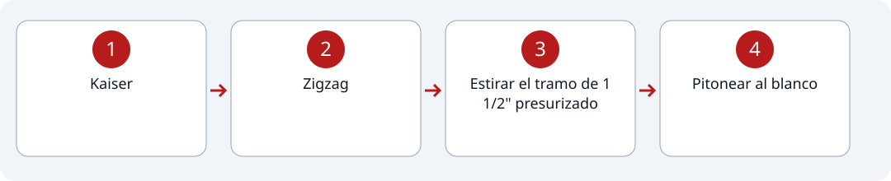
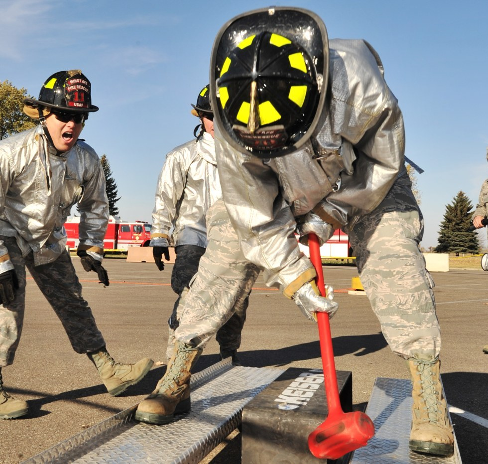
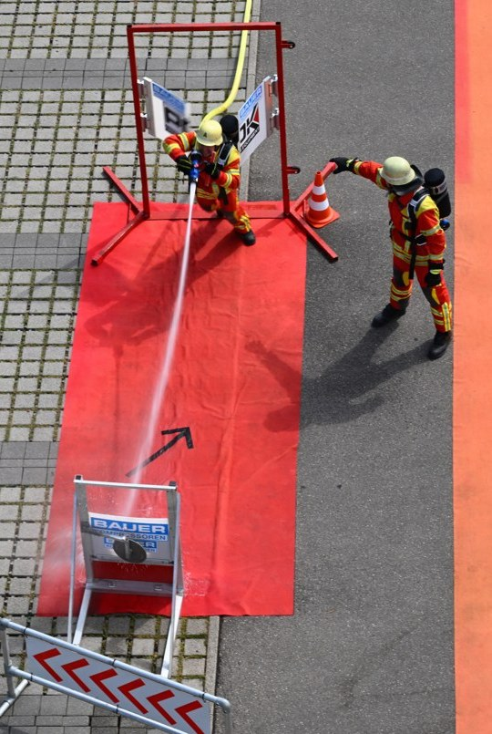

1
Estación #3
Kaiser, zigzag, estirar tramo y pitonear al blanco.
Recorrido de la estación

Pasos
2
Zigzag
3
Estirar el tramo de 1 1/2" presurizado
4
Pitonear al blanco


Indicaciones
- Kaiser
- * Se debe golpear el peso hasta que el mismo recorra un metro.
- * Solo puedes golpear el peso, si golpeas la estructura o "al aire" se tendrá una penalización de 2 segundos por golpe.
- * Dejar la mandarria en la zona designada, caso contrario penalización de 5 segundos.
- Zigzag
- * Se debe recorrer por la parte externa, todos y cada uno de los conos; si no se lo hace o pasa por encima de uno, penalización de 5 segundos.
- Estirar el tramo
- * Agarras el pitón y cruzas en medio de la pista de conos; si mueves uno de los conos con el tramo, fuera de su zona, penalización de 2 segundos.
- Pitonear al blanco
- * Pitonear solamente en la zona asignada.
- * Pasar una compuerta para pitonear al blanco.
- * Pitonear antes de la apertura de la puerta, penalización de 2 segundos.
- * Abrir el pitón antes de llegar al punto indicado, penalización de 2 segundos.
- * Una vez acertado el blanco, cerrar el pitón y colocarlo suavemente en la zona designada.
- * Botar el pitón al piso, 2 segundos de penalización.
- * Dejar el pitón abierto, 2 segundos de penalización.